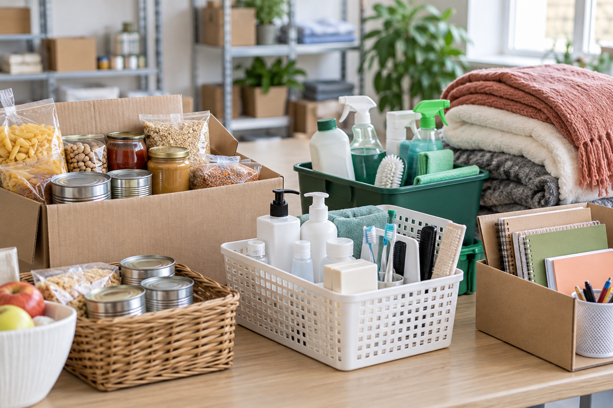

Ambientes de cuidado
Casas parceiras oferecem rotina, acompanhamento e espaço seguro para reconstrução de vínculos.
Rede de apoio e cuidado
Conheça casas de recuperação atendidas, veja necessidades atuais e registre seu interesse em ajudar de forma simples.
Casas atendidas
O EcoCare organiza informações para que cada casa possa comunicar suas prioridades com clareza e receber apoio no momento certo.
Casas parceiras oferecem rotina, acompanhamento e espaço seguro para reconstrução de vínculos.
Funcionários atualizam os itens prioritários para orientar doadores e evitar desperdício.
Doações
As necessidades abaixo são carregadas a partir do painel do funcionário. Quando não houver cadastro, mostramos uma lista inicial para orientar a campanha.

Impacto
Conteúdo
Prefira produtos dentro da validade, embalagens íntegras e roupas limpas.
Alimentos, higiene e limpeza mantêm a casa funcionando todos os dias.
Quando o volume é maior, o pedido de retirada aproxima doador e equipe.
Empresas podem informar os dados necessários para organização fiscal da doação.
Histórico
Consulte as doações registradas neste navegador e abra novamente a nota fiscal local de cada contribuição confirmada.
Comprovante fiscal
Este documento é um comprovante local de intenção de doação. A emissão de NF-e oficial depende de integração fiscal autorizada.